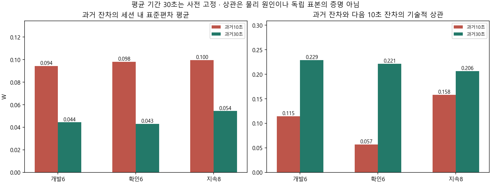
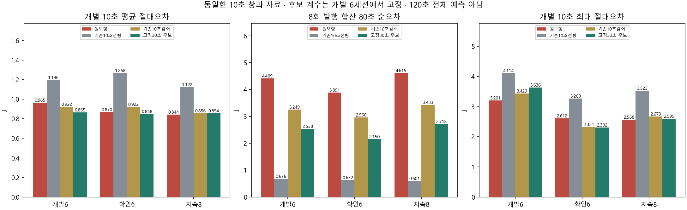

잔차의 통계적 시간 규모를 비교한 결과다. 센서 잡음·백그라운드·상태 비용의 물리 원인을 식별한 것은 아니다. 센서 내부 갱신 주기는 미확인이고 개별 요청 전력도 식별되지 않았다. 모든 자료는 이미 열람한 사후 평가이며 정확도 합격이나 정책 우월성을 판정하지 않는다.
실제 미래 lane 일정이 주어진 조건부 계산이다. 예측 입력의 전력 관측은 각 발행 시점 이전에 가용했던 것만 사용한다. 합산 80초는 35–115초의 8개 순차 예측을 합친 값이며, 한 번에 만든 전체 창 예측과 구분한다. AP·기본 모형·RL·strict·experiment_ready=false는 유지한다.
판독·재현 · 개발 동결 · 전체 20세션 · 전류·전압 기록 통계


| 자료 | 역할 | 방식 | 세션 | 10초MAE J | 합산80초MAE J | 개별악화 | 합산악화 |
|---|---|---|---|---|---|---|---|
| history | development | FROZEN | 6 | 0.9647024932944133 | 4.408840961151833 | 0 | 0 |
| history | development | FULL10 | 6 | 1.1964179588894952 | 0.6758886275832653 | 4 | 1 |
| history | development | SHRINK10_FIXED | 6 | 0.9215948082691058 | 3.248588947627104 | 4 | 1 |
| history | development | MEMORY30 | 6 | 0.8654057092674932 | 2.537934748354718 | 4 | 1 |
| history | confirmation | FROZEN | 6 | 0.8695698563767069 | 3.8914045892994085 | 0 | 0 |
| history | confirmation | FULL10 | 6 | 1.2677452677971424 | 0.6319218857589796 | 6 | 1 |
| history | confirmation | SHRINK10_FIXED | 6 | 0.9215210167824244 | 2.959748731246417 | 6 | 0 |
| history | confirmation | MEMORY30 | 6 | 0.8475580435988718 | 2.1496681825689787 | 3 | 0 |
| sustained | evaluation | FROZEN | 8 | 0.8437052997823998 | 4.614531371007804 | 0 | 0 |
| sustained | evaluation | FULL10 | 8 | 1.1221723394134702 | 0.6012288289580772 | 7 | 0 |
| sustained | evaluation | SHRINK10_FIXED | 8 | 0.8563442320568 | 3.4334702631335245 | 4 | 0 |
| sustained | evaluation | MEMORY30 | 8 | 0.8538015308882281 | 2.7175143557856183 | 4 | 0 |